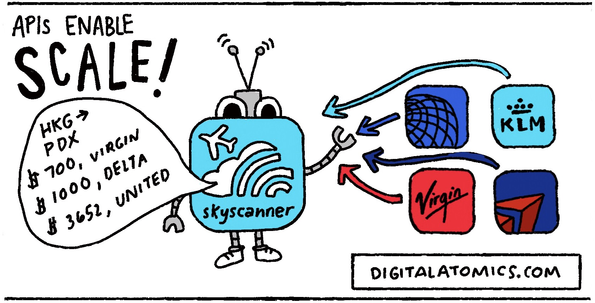

A connection with
description "https://api.crossref.org/works/10.1016/j.gloplacha.2022.103790"
class "url-libcurl"
mode "r"
text "text"
opened "closed"
can read "yes"
can write "no"
API development with R
Roberto Villegas-Diaz
University of Liverpool
Outline
- Day 1
- Introduction to APIs
- Working with APIs
- Introduction to
{plumber}
- Day 2
- Building your own API
- Further considerations
Introduction to APIs
What’s an API?
Application Programming Interface
Source: (Tolassy, 2015)
Why use APIs?
- Streamline your data flows
- Common language
- Static interface
- Enable others to use your “products”

How do APIs work?
You don’t need to know how the kitchen or the restaurant operates, you just need to know how to order. (Grgurić and Buhler, 2020)
Source: (Layne, 2020)
Example APIs
Few examples (there are too many):
- Open Street Maps: https://wiki.openstreetmap.org/wiki/API
- Wikidata: https://www.wikidata.org/w/api.php?action=help
- X / Twitter: https://developer.twitter.com/en/products/twitter-api

Source: (Fox, 2016)
Example APIs
Few examples (there are too many):
- Open Street Maps: https://wiki.openstreetmap.org/wiki/API
- Wikidata: https://www.wikidata.org/w/api.php?action=help
- X / Twitter: https://developer.twitter.com/en/products/twitter-api
Resources of interest:
- List of public APIs: https://github.com/public-apis/public-apis
- R package to access Hundreds of ‘APIs’: https://github.com/jonthegeek/anyapi
Working with APIs
Structure of a Query
Source: (realisable, 2023)
Structure of a Query
Source: (realisable, 2023)
| “Method” | “Scheme” | “Server” | “Path” | “Query String” |
|---|---|---|---|---|
| Pavement | Liver building | Flat 3 | Kitchen/cupboard/get_mug | colour=red |
| Road | Liver building | Garage | park_car |
Structure of a Query: Response
- Typically get a header and content in the response.
- Common response codes in header
- 200 – OK
- 404 – Not found
- 500 – Internal server error
- For more details see: https://en.wikipedia.org/wiki/List_of_HTTP_status_codes
- Content is usually formatted in JSON1 or XML2.
Structure of a Query: Example
Source: (Teplitzky et al., 2021)
Try running the following line of code:
Replace <DOI> by any DOI (Direct Object Identifier) you want! For example: 10.1016/j.gloplacha.2022.103790.
Structure of a Query: Example
Source: (Teplitzky et al., 2021)
Try running the following line of code:
Structure of a Query: Example
Source: (Teplitzky et al., 2021)
Try running the following line of code:
con <- url("https://api.crossref.org/works/10.1016/j.gloplacha.2022.103790")
tmp <- readLines(con)
strsplit(tmp, ",")[[1]][1:12] # extract few rows [1] "{\"status\":\"ok\""
[2] "\"message-type\":\"work\""
[3] "\"message-version\":\"1.0.0\""
[4] "\"message\":{\"indexed\":{\"date-parts\":[[2024"
[5] "2"
[6] "7]]"
[7] "\"date-time\":\"2024-02-07T17:44:10Z\""
[8] "\"timestamp\":1707327850108}"
[9] "\"reference-count\":52"
[10] "\"publisher\":\"Elsevier BV\""
[11] "\"license\":[{\"start\":{\"date-parts\":[[2022"
[12] "4" Structure of a Query: Example
Source: (Teplitzky et al., 2021)
A nicer approach to run this code:
Hands on session 1
[Guided] How many people are on the International Space Station (ISS) right now?
[DIY] What is the current position of the International Space Station? Can you create a plot?
[Guided] How many people are on the International Space Station right now?
API call: http://api.open-notify.org/astros.json
Response [http://api.open-notify.org/astros.json]
Date: 2024-02-20 08:39
Status: 200
Content-Type: application/json
Size: 360 BNote
Note the values for Status and Content-Type! Both useful to determine whether the query was successful and the type of content returned.
[Guided] How many people are on the International Space Station right now?
API call: http://api.open-notify.org/astros.json
[Guided] How many people are on the International Space Station right now?
API call: http://api.open-notify.org/astros.json
response <- httr::GET("http://api.open-notify.org/astros.json")
# the content is in binary, so convert the response to an R data object
content <- jsonlite::fromJSON(rawToChar(response$content))
# check the people
content$people name craft
1 Jasmin Moghbeli ISS
2 Andreas Mogensen ISS
3 Satoshi Furukawa ISS
4 Konstantin Borisov ISS
5 Oleg Kononenko ISS
6 Nikolai Chub ISS
7 Loral O'Hara ISS[Guided] How many people are on the International Space Station right now?
API call: http://api.open-notify.org/astros.json
Alternative
Note that we can use the API call with the jsonlite::read_json function; however, we don’t get as much details from the call as we did with our previous approach. Also, this only works when the response returned is in JSON format.
[Guided] How many people are on the International Space Station right now?
API call: http://api.open-notify.org/astros.json
[Guided] How many people are on the International Space Station right now?
API call: http://api.open-notify.org/astros.json
[Guided] How many people are on the International Space Station right now?
API call: http://api.open-notify.org/astros.json
# read contents from API call
contents <- jsonlite::read_json("http://api.open-notify.org/astros.json")
# extract details of the crew
contents$people |>
purrr::map(\(x) tibble::tibble(name = x$name, craft = x$craft)) |>
purrr::list_rbind()# A tibble: 7 × 2
name craft
<chr> <chr>
1 Jasmin Moghbeli ISS
2 Andreas Mogensen ISS
3 Satoshi Furukawa ISS
4 Konstantin Borisov ISS
5 Oleg Kononenko ISS
6 Nikolai Chub ISS
7 Loral O'Hara ISS [DIY] What is the current position of the International Space Station? Can you create a plot?
API call: http://api.open-notify.org/iss-now.json
response <- httr::GET("http://api.open-notify.org/iss-now.json")
# the content is in binary, so convert the response to an R data object
content <- jsonlite::fromJSON(rawToChar(response$content))
# get timestamp
as.POSIXct(content$timestamp)[1] "2024-02-20 08:39:52 GMT"$longitude
[1] "-107.2170"
$latitude
[1] "-8.4253"[DIY] What is the current position of the International Space Station? Can you create a plot?
API call: http://api.open-notify.org/iss-now.json
We can create a helper function to extract multiple records:
iss_position <- function() {
response <- httr::GET("http://api.open-notify.org/iss-now.json")
# the content is in binary, so convert the response to an R data object
content <- jsonlite::fromJSON(rawToChar(response$content))
Sys.sleep(1) # pause for 1 second
# extract each field and convert to the appropriate data type
tibble::tibble(
timestamp = as.POSIXct(content$timestamp),
longitude = as.numeric(content$iss_position$longitude),
latitude = as.numeric(content$iss_position$latitude)
)
}
# map over the helper function X times, here 10
iss_position_tbl <- seq_len(10) |> # number of positions to extract
purrr::map(\(x) iss_position()) |>
purrr::list_rbind()[DIY] What is the current position of the International Space Station? Can you create a plot?
Here is a subset of the positions captured for 15 minutes, seq_len(15 * 60):
| timestamp | longitude | latitude |
|---|---|---|
| 2024-02-18 20:17:19 | -94.8448 | 11.1795 |
| 2024-02-18 20:17:20 | -94.8072 | 11.1294 |
| 2024-02-18 20:17:21 | -94.7697 | 11.0792 |
| 2024-02-18 20:17:22 | -94.7134 | 11.0040 |
| 2024-02-18 20:17:23 | -94.6759 | 10.9538 |
| 2024-02-18 20:17:24 | -94.6385 | 10.9036 |
| 2024-02-18 20:17:26 | -94.5823 | 10.8283 |
| 2024-02-18 20:17:27 | -94.5448 | 10.7781 |
| 2024-02-18 20:17:28 | -94.5074 | 10.7279 |
| 2024-02-18 20:17:29 | -94.4513 | 10.6526 |
| 2024-02-18 20:34:45 | -50.5240 | -38.9132 |
| 2024-02-18 20:34:46 | -50.4619 | -38.9522 |
| 2024-02-18 20:34:47 | -50.3997 | -38.9911 |
| 2024-02-18 20:34:48 | -50.3063 | -39.0495 |
| 2024-02-18 20:34:49 | -50.2439 | -39.0883 |
| 2024-02-18 20:34:50 | -50.1814 | -39.1271 |
| 2024-02-18 20:34:52 | -50.0876 | -39.1852 |
| 2024-02-18 20:34:53 | -50.0250 | -39.2239 |
| 2024-02-18 20:34:54 | -49.9623 | -39.2625 |
| 2024-02-18 20:34:55 | -49.8681 | -39.3205 |
Note
Note that only the top 10 rows and the bottom 10 rows are showned, there are an additional 880 rows of data ranging from 2024-02-18 20:17:30 to 2024-02-18 20:34:45.
[DIY] What is the current position of the International Space Station? Can you create a plot?
Plot the positions, here using the {leaflet} package:
# create icon from online image
iss_icon <- leaflet::makeIcon(
iconUrl = "https://cdn-icons-png.flaticon.com/512/81/81959.png",
iconWidth = 15,
iconHeight = 15
)
# create plot of the positions
iss_position_tbl |>
leaflet::leaflet() |>
leaflet::addTiles() |>
leaflet::addMarkers(
lng = ~longitude,
lat = ~latitude,
label = ~timestamp,
icon = iss_icon
)[DIY] What is the current position of the International Space Station? Can you create a plot?
Introduction to {plumber}
What’s {plumber}?
Plumber allows you to create a web API by merely decorating your existing R source code with roxygen2-like comments. (Schloerke and Allen, 2022)
R comments & decorators
- Regular R comments are included with the
#. - Roxygen2 comments allow the user to document their functions with the notation
#'which is translated into R documentation. {plumber}uses the notation#*.
{plumber}-ising a function / notation
Given a simple hello world function
{plumber}-ising a function / notation
Given a simple hello world function:
{plumber}-ised function!
Note
- The change from
#to#*for the comments. - The addition of
@get /<function_name>. - The function name was removed.
{plumber}-ising a function / notation: with params
Given a function to calculate the square of a number, a:
{plumber}-ising a function / notation: with params
Given a function to calculate the square of a number, a:
#* This function calculates the square of `a`
#* @param a Numeric value.
#* @get /square
function(a) {
return(as.numeric(a) ^ 2)
}{plumber}-ised function!
Note
- The change from
#to#*for the comments. - The addition of
@param <param_name> <description. If the function had multiple params, the each of them will have to be documented using this format. - The addition of
@get /<function_name>. - The function name was removed.
Routing & Input
An incoming HTTP request must be “routed” to one or more R functions. Plumber has two distinct families of functions that it handles: endpoints and filters. (Schloerke and Allen, 2022)
Routing & Input: endpoints
An endpoint is an annotated function, like those we already saw:
Note
This annotation specifies that this function is responsible for generating the response to any GET request to /hello_world.
Routing & Input: endpoints
The annotations that generate an endpoint include:
@get: Read@post: Read / write@put: Update / replace@delete: Delete
Routing & Input: filters
allow to break down complex logic into a sequence of independent, understandable steps. (Schloerke and Allen, 2022)
Filters can do one of three things in handling a request:
- Forward control onto the next handler, potentially after mutating the request.
- Return a response itself and not forward to subsequent handlers
- Throw an error
Rendering Output
A response object (an environment) contains the following elements:
| Name | Example | Description |
|---|---|---|
| headers | list(header = "abc") |
A list of HTTP headers to include in the response |
| body | NULL |
This is set to the serialized output of the handler |
| status | 200 |
The HTTP status code included in the response |
Rendering Output: serializers
In order to send a response from R to an API client, the object must be “serialized” into some format that the client can understand. (Schloerke and Allen, 2022)
Some examples:
- CSV:
@serializer csv - JPEG:
@serializer jpeg - JSON:
@serializer json - PDF:
@serializer pdf - PNG:
@serializer png - Text:
@serializer text
Rendering Output: serializers
Serializers can also be customised:
Building your own API
Hands on session 2
Write a plumber function to use the gapminder dataset to find the population of Costa Rica in 1982.
Note
Gapminder is a dataset of populations of various countries from 1952 - 2007. We will access it with the
{gapminder}package. (Bryan, 2023)Write a plumber function to allow a user to find out the population of any country during any year in gapminder.
Write a plumber function to plot the population change of a user defined country.
Write a plumber function to use gapminder data to show population of Costa Rica in 1982
Where to we start?
- We can start by creating a “simple” R function that gets the data want!
Write a plumber function to use gapminder data to show population of Costa Rica in 1982
- Next, we can add the “
{plumber}decorators” to transform this function.
Further considerations
Thank you!
r.villegas-diaz@liverpool.ac.uk
References
Bryan, J., 2023. Gapminder: Data from gapminder.
Butters, O., 2022. Health data science: Plumber lecture. University of Liverpool.
Fox, T., 2016. Anatomy of an HTTP request & response. Trevor Fox.
Grgurić, E., Buhler, J., 2020. Introduction to APIs. The University of British Columbia.
Layne, C., 2020. A is for application: API basics. Medium.
Parker, A., n.d. What are APIs and how do they work? tray.io.
realisable, 2023. Anatomy of an HTTP request & response. realisable.
Schloerke, B., Allen, J., 2022. Plumber: An API generator for R.
Teplitzky, S., Tranfield, W., Warren, M., White, P., 2021. Introducing reproducibility to citation analysis: A case study in the earth sciences. Journal of eScience Librarianship 10.
Tolassy, K., 2015. Apis: Introduction and context. Mobapi project.
Zhong, H., Mei, H., 2019. An empirical study on API usages. IEEE Transactions on Software Engineering 45, 319–334.